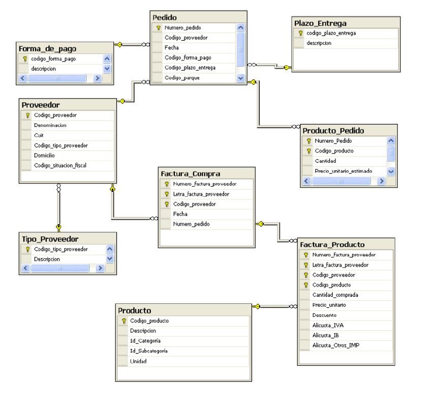

Modelo Multidimensional (OLAP)
Conceptos fundamentales
El modelo multidimensional es la base para el diseño de Almacenes de Datos (Data Warehouses), cuyo objetivo es soportar el análisis de información para la toma de decisiones. A diferencia de los modelos transaccionales (OLTP), el modelo multidimensional busca optimizar la rapidez y simplicidad de las consultas.
El diseño de estos modelos se basa en transformar las preguntas del negocio en dos componentes esenciales: Hechos y Dimensiones.
Componentes clave
1. Tabla de Hechos (Fact Table)
La tabla de hechos es la tabla principal o central del modelo dimensional.
- Propósito: Registra los eventos del negocio que se desean analizar, como las compras o las ventas.
- Métricas o Indicadores: Contiene los valores numéricos, medibles y cuantitativos del evento que se van a analizar (por ejemplo, el financiamiento invertido o el total de películas producidas). Estos valores son generalmente agregables.
- Granularidad: Los hechos se registran a un alto nivel de atomicidad o mínima expresión, lo que se conoce como granularidad.
2. Tablas de Dimensiones (Dimension Tables)
Las dimensiones proporcionan el contexto o la perspectiva de análisis del hecho. Son atributos que describen los datos indicados en los hechos (metadatos).
- Contenido: Las dimensiones contienen la información descriptiva de los hechos. Aunque suelen tener menos registros que la tabla de hechos, cada registro puede tener un gran número de atributos descriptivos.
- Ejemplos comunes: Los contextos típicos incluyen el tiempo (fecha, mes, año), la geografía (país, provincia, ciudad), los productos, o los proveedores.
- Jerarquías: Las dimensiones a menudo contienen jerarquías o relaciones internas. Por ejemplo, a partir de una dimensión base como la fecha de estreno, se pueden derivar el trimestre, el mes, el año y la década.
Esquemas comunes
El modelo multidimensional se representa típicamente mediante dos esquemas:
Esquema en Estrella (Star Schema)
El Esquema en Estrella es el modelo dimensional ideal por su simplicidad y velocidad para el análisis (OLAP).
- Estructura: Una tabla de hechos central está rodeada por tablas de dimensiones.
- Ventajas: Las consultas (JOINs) solo involucran a la tabla de hechos y a las de dimensiones, simplificando la consulta y mejorando el rendimiento. Se considera el esquema ideal para la visualización de datos.
Esquema en Copo de Nieve (Snowflake Schema)
Este esquema es más complejo y se presenta cuando las dimensiones están normalizadas (una dimensión tiene más de una tabla asociada).
- Desventaja: La tabla de hechos no está relacionada directamente a todas las tablas que componen el modelo de datos, lo que requiere uniones (JOINs) encadenadas y más complejas. Su objetivo principal es disminuir el almacenamiento.
Recursos adicionales
Bases de datos: Diseño de un cubo OLAP (Ejemplo 1)
Bases de datos: Diseño de un cubo OLAP (Ejemplo 2)
EJERCICIO. Diseño del modelo Multidimensional de Compras
Para construir el Modelo Multidimensional de Compras, se deben seguir los pasos de la metodología analítica, identificando el hecho, los indicadores y las dimensiones necesarias para responder a las preguntas gerenciales.
Dado el siguiente modelo de datos transaccional:

1. Identifica las tablas de Hechos
El hecho principal objeto de análisis en este contexto es:
- Hecho (Fact):
2. Identifica posibles Hechos y sus posibles calculos
Los cálculos (o métricas) son los valores numéricos que la gerencia desearía analizar en función del evento "Compra".
| Criterio | Ejemplos de Indicadores (Medidas) |
|---|---|
| Cuantificación | |
| Financiero | |
| Contable |
3. Identifica las Dimensiones/Catalogos
Las dimensiones definen las perspectivas de análisis para desagregar los indicadores de Compras (el contexto de quién, qué, cuándo y dónde).
| Dimensión | Atributos descriptivos |
|---|---|
Nota: Identificar jerarquías dentro de estas dimensiones es clave para el diseño.
4. Construir el modelo multidimensional
El diseño recomendado es el Esquema en Estrella, debido a su simplicidad para las consultas analíticas.
Os podeis ayudar de la herramienta online DrawIO
5. Describe textualmente el modelo y que contiene
- Contenido:
- Análisis:
- Beneficio:
6. Analizar otras posibilidades de diseños
Además del diseño base, se pueden considerar alternativas para mejorar la eficiencia del análisis:
- Data Marts (DM):
- Capas Agregadas:
ENTREGABLE
Hay que facilitar un documento con todos los puntos del ejercicio y el diseño en la plataforma Aules.